In dem Register "FIBU" des Personenkontenstamms werden alle wesentlichen Informationen verwaltet, welche speziell die Finanzbuchhaltung betreffen. Die Informationen sind auf die Unterregister "FIBU" und "Erweitert" aufgeteilt.
Hinweis
Handelt es sich bei dem Personenkonto um ein sogenanntes Subkonto, so stammen die nachfolgenden Daten vom Hauptkonto und sind nicht veränderbar (nähere Information zu dem Thema "Haupt- und Subkonto" entnehmen Sie bitte dem Kapitel Personenkonten - Anlage, Bereich "Kontenstamm").
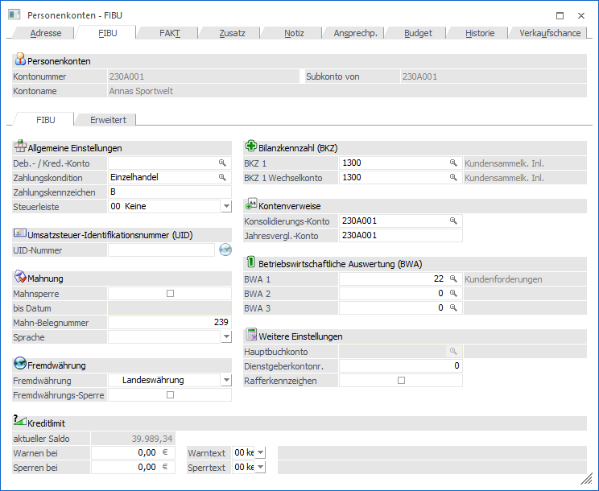
Folgende Eingabefelder, Einstellungen und Informationen stehen zur Verfügung:
Personenkonten
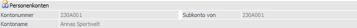
Ø Kontonummer
An dieser Stelle wird die Kontonummer des ausgewählten Personenkontos angezeigt.
Ø Subkonto von
Handelt es sich bei dem aktuellen Personenkonto fakturierungstechnisch um ein Subkonto eines anderen Personenkontos, so wird hier die Kontonummer des sogenannten Hauptkontos angezeigt und alle folgenden Felder sind für eine Eingabe gesperrt. Handelt es sich nicht um einen Subkonto, so wird an dieser Stelle die Personenkontennummer des aktuellen Kontos dargestellt.
Ø Kontoname
Hier wird der Kontoname des aktuell gewählten Kontos dargestellt.
Unterregister "FIBU" - Allgemeine Einstellungen
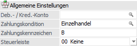
Ø Deb.-/Kred.-Konto (für Funktion Debitorische Kreditoren)
Durch Eintragen des korrespondierenden Personenkontos können im OP-Bereich (Mahnung, Zahlungsverkehr, OP-Auswertungen) die Offenen Posten des debitorischen Kreditoren automatisch gegengerechnet werden. So wird vermieden, dass z.B. Lieferantenrechnungen irrtümlich überwiesen werden, obwohl der Lieferant als Kunde noch Rechnungen ausständig hat.
Ø Zahlungskonditionen
Wird eine Zahlungskondition eingetragen, so werden die Konditionenfelder automatisch mit den Werten der Zahlungskonditionentabelle vorbesetzt. Die Auswahl selber kann hierbei über den Matchcode oder die Autovervollständigung geschehen.
Bei der Neuanlage eines Kontos wird die erste Zahlungskondition vorgeschlagen und gespeichert, wenn das Feld "Zahlungskondition" nicht explizit angesprochen wurde. Diese Konditionen können in der Buchungsmaske übersteuert werden.
Hinweis
Wird eine Zahlungskondition angegeben, die bereits auf "inaktiv" gesetzt wurde, erfolgt eine entsprechende Meldung; die Zahlungskondition kann jedoch hinterlegt werden.
Ø Zahlungskennzeichen
Das Zahlungskennzeichen (1stellig, alphanumerisch) hat 2 Funktionen:
ü Zessions-Kennzeichen für
Debitoren-Auswertungen
Die Eintragung von "Z" im Datenfeld
"Zahlungskennzeichen" bewirkt, dass auf Kontoblättern und Offenen
Posten-Auswertungen der Zessionstext angedruckt wird. Der Zessionstext wird in
den FIBU-Parametern der WinLine START hinterlegt.
ü Selektions-Kennzeichen für den
Zahlungsverkehr
Im Programmabschnitt "Zahlungsverkehr" kann der Abruf für
Überweisungsträger und Verrechnungsschecks eingeschränkt werden. Als
Selektionskriterien für den Zahlungsverkehr wird das Zahlungskennzeichen
eingesetzt.
Beispiel
U für Lieferanten, deren Fakturen mit Überweisungsträgern bezahlt werden; S für Lieferanten, deren Fakturen mit Verrechnungsscheck beglichen werden.
Ø Steuerleiste
Eingabe der entsprechenden Unternehmensstammleiste aus dem Unternehmensstamm. Aus der Auswahlliste kann eine angelegte Steuerleiste übernommen werden. Dadurch kann gesteuert werden, dass immer der richtige Steuerprozentsatz verwendet wird. Diese Option ist nur bei Einsatz der WinLine FAKT sinnvoll (
nähere Informationen entnehmen Sie dem Kapitel "Unternehmensstamm").
Beispiel
In der Fakturierung gibt es zwei Arten von Artikel: Waren und Dienstleistungen. Jeder Artikel hat ein eigenes Erlöskonto und eine eigene Steuerzeile. Die darauf entfallene Umsatzsteuer muss lt. RLG getrennt ausgewiesen werden. Wenn nun beide Artikel z.B. in die EU exportiert werden, werden über die Kontenmaskierung der Belegart eigene Erlöskonten angesteuert. Über die Steuerleiste wird nun die Steuerzeile gefunden, die gemäß dem Kunden verwendet werden müssen.
Unterregister "FIBU" - Umsatzsteuer-Identifikationsnummer (UID)
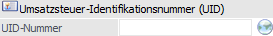
Ø UID-Nummer
An dieser Stelle erfolgt die Eingabe der UST-ID-Nummer des Personenkontos, wobei der Aufbau der eigegebenen Nummer beim Verlassen des Felds auf Korrektheit geprüft wird (in Abhängigkeit der ersten beiden Stellen).
Hinweis
Grundsätzlich kann die UID-Nummer direkt auf Gültigkeit überprüft werden, wobei eine erweiterte Prüfung nur in Mandanten mit Landeskennzeichen "Österreich" und "Deutschland" möglich ist. Die Prüfung selber wird über das Icon neben dem Eingabefeld ausgelöst, wobei folgende Stati möglich sind:
ü - keine Prüfung möglich
Es wurde noch
keine bzw. keine (vom Aufbau her) gültige UID-Nummer hinterlegt. Eine Prüfung
ist somit nicht möglich.
ü  - Prüfung möglich
- Prüfung möglich
Eine Prüfung ist
generell möglich, wobei es sich um einen deutschen Mandanten mit einer deutschen
zu prüfenden UID-Nummer handelt oder um einem Mandanten mit Landeskennzeichen
ungleich "Österreich". Bei diesen Konstellationen wird nur die Prüfung der Stufe
1 unterstützt!
Ob eine Prüfung erfolgen oder ein Protokoll ausgegeben werden
soll, kann durch Anwahl des Icons entschieden werden.
ü - Erweiterte Prüfung möglich und noch nicht
erfolgt
Eine Prüfung ist generell möglich, wobei die Prüfung der Stufe 2 noch
nicht ausgeführt wurde. Bei Anwahl des Icons stehen die unterschiedlichen
Prüfungsstufen bzw. ein Protokoll zur Auswahl zu Verfügung.
ü  - UID-Nummer ist gültig
- UID-Nummer ist gültig
Es wurde die
Prüfung der Stufe 2 durchgeführt und die UID-Nummer wurde als gültig
erkannt.
ü  - UID-Nummer ist ungültig
- UID-Nummer ist ungültig
Es wurde die
Prüfung der Stufe 2 durchgeführt und die UID-Nummer wurde als ungültig
erkannt.
Hinweis
Weitere Informationen zur UID-Prüfung in den Stammdaten entnehmen Sie bitte dem Kapitel Exkurs - Prüfung der Umsatzsteuer-Identifikationsnummer.
Unterregister "FIBU" - Mahnung
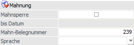
Ø Mahnsperre
An dieser Stelle kann eine mögliche Mahnsperre hinterlegt werden.
ü Option ist inaktiv
Der Kunde
unterliegt der Standard-Mahnautomatik, d.h. seine Daten werden im Zuge des
Mahnlaufes geprüft und gegebenenfalls Mahnungen gedruckt. Sind bestimmte
Fakturen aus der Mahnautomatik auszunehmen, dann ist im Programmabschnitt
"Fakturenänderung" eine Mahnstufe zwischen 90 und 99 zu vergeben.
ü Option ist aktiviert
Der Kunde
wird in den Mahnlauf nicht einbezogen.
Ø bis Datum
In diesem Feld kann ein Datum eingetragen werden, bis zu dem die Mahnsperre aktiviert bleiben soll. Wird hier kein Datum eingetragen, ist die Mahnsperre unbefristet gültig.
Ø Mahn-Belegnummer
Dieses Feld wird vom Programm für den Druck von Mahnungen bzw. von Begleitzetteln verwendet - damit ist die Anzahl der bereits verschickten Mahnungen bzw. Begleitzettel ersichtlich.
Wird in diesem Feld eine Zahl eingetragen, wird ausgehend von diesem Wert mit jeder Mahnung bzw. mit jedem Begleitzetteldruck die Nummer hochgezählt (bei der Mahnung wird dieser Wert nur dann hochgezählt, wenn die Ausgabe eines Kontoauszuges auf Drucker erfolgt).
Wird in diesem Feld nichts eingetragen (0), so wird von diesem Wert aus bei jedem Mahn- bzw. Begleitzetteldruck hochgezählt.
Ø Sprache
Aus der Auswahlliste kann die Sprache ausgewählt werden, in welcher der Kunde seine Mahnungen bekommen soll. Abhängig von dieser Einstellung wird auch das Mahnformular gesteuert. Die verschiedenen Sprachen werden in der WinLine START unter "Optionen - Sprachen" angelegt.
Nomenklatur der Formulare
Der Name der Mahnung nach der Nomenklatur "P01Wmwyzzzzzxx" aufgebaut.
ü P01Wm
konstantes Kennzeichen für die
Mahnung
ü w
Ländereinstellung (0 = Deutsch, 1 = Englisch,
etc.; siehe "WinLine START - Parameter - Einstellungen)
ü y
höchste Mahnstufe des Kunden
ü zzzzz
Sprachkennzeichen aus dem Personenkontenstamm
(die Sprachdefinition erfolgt im in der WinLine START unter "Optionen -
Sprachen")
ü xx
Im Anschluss an die Mahnung kann noch ein
weiterer Beleg (z.B. Zahlschein) gedruckt werden. Dies passiert allerdings nur
dann, wenn für das verwendete Formular auch ein xx-Formular vorhanden ist. Auf
diesem Formular können nur Kopf- und Fußteilsvariablen angedruckt werden.
Einzelne Faktureninformationen sind nicht möglich.
Beispiele - Aufbau
ü Das Formular P01WM03I ist die Mahnung für die deutsche Installation (P01WM03I), Mahnstufe 3 (P01WM03I), in italienischer Sprache (P01WM03I).
ü Das Formular P01WM12US ist die Mahnung für die englische Installation (P01WM12US), Mahnstufe 2 (P01WM12US), in englischer Sprache (P01WM12US).
Sind bei einem Mahnlauf entsprechende Formulare nicht vorhanden, dann sucht das Programm die am besten passenden Formulare.
Beispiele - Fehlerfall
ü Ländereinstellung = 0
ü höchste Mahnstufe des Kunden = 4
ü Sprachkennzeichen des Kunden = ENGL
ü 1. Versuch: P01WM04ENGL -> sucht für Mahnstufe 4 das englische Formular)
ü 2-Versuch: P01WM040 -> sucht das Standardformular für Mahnstufe 4 ohne Sprachdifferenzierung
ü 3. Versuch: P01WM0ENGL -> sucht für Mahnstufe 0 das englische Formular
ü 4. Versuch: P01WM000 -> sucht das Standardformular für Mahnstufe 0 ohne Sprachdifferenzierung
Unterregister "FIBU" - Fremdwährung
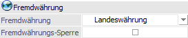
Ø Fremdwährung
An dieser Stelle kann das Fremdwährungsverhalten während des Buchens definiert werden.
ü Landeswährung
Wird der Eintrag
"Landeswährung" aus der Auswahlliste gewählt, so darf das Konto in jeder
Fremdwährung und in Landeswährung bebucht werden.
ü Bestimmte Währung
Wird eine
bestimmte Währung (z.B. US-Dollar oder Schweizer Franken) aus der Auswahlliste
gewählt, dann kann dieses Konto nur in dieser Währung bebucht werden. Beim
Buchen wird automatisch das Fremdwährungsfenster mit der entsprechenden Währung
vorgeschlagen.
Hinweis
Wurde das Konto einmal mit dieser Fremdwährung bebucht, so kann die Fremdwährung nur mehr auf Landeswährung geändert werden.
Hinweis
Wurde ein Konto bereits mit einer bestimmten Fremdwährung bebucht, so kann nur mehr diese als Fremdwährung beim Konto hinterlegt werden.
Ø Fremdwährungssperre
Ist diese Checkbox aktiv, so kann das entsprechende Konto nicht mehr in Fremdwährung gebucht werden. Ist die Checkbox deaktiviert, dann kann über das Feld "Fremdwährung" entschieden werden, welche bzw. wie viele Fremdwährungen verwendet werden können.
Unterregister "FIBU" - Bilanzkennzahl (BKZ)
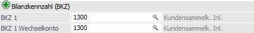
Ø BKZ 1 / BKZ 1 Wechselkonto
Die Position des Kontos in der Bilanz wird durch die Eintragung von Bilanzgliederungskennzahlen festgelegt, wobei insgesamt 3 mögliche Bilanzgliederungen hinterlegt werden können (siehe auch Unterregister "Erweitert").
Achtung
Soll ein Konto unabhängig vom Wert des Saldos (Soll-Saldo/Haben-Saldo) einer fixen Bilanz-Position oder G & V-Position zugeordnet werden, wird in den Feldern "BKZ1" und "BKZ1 Wechselkonto" die gleiche BKZ eingetragen.
Hinweis
Sobald bei einem Konto ein Hauptbuchkonto eingetragen ist, werden die Einstellungen für BKZ und BKZ Wechselkonto vom Hauptbuchkonto automatisch übernommen. In diesem Fall sind die BKZ und BKZ Wechselkonto-Felder inaktiv und können nicht bearbeitet werden.
Unterregister "FIBU" - Kontenverweise
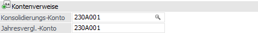
Ø Konsolidierungs-Konto
Wenn eine konsolidierte Bilanz erstellt wird und dieses Konto im Hauptmandanten nicht angelegt ist, kann hier ein "Ersatzkonto" angegeben werden, auf welches die Summen dieses Kontos gerechnet werden sollen.
Dieses Feld dient zum Zuweisen eines Personenkontos zwischen Haupt und Submandanten und wird über die Zuweisung verändert. Damit wird das Personenkonto bei einer Änderung im Hauptmandanten im Submandanten automatisch abgeglichen / aktualisiert (wenn die Daten mit einer einsprechenden Vorlage verändert werden).
Wenn eine Änderung im Submandanten durchgeführt wird, wird der Hauptmandant auch aktualisiert, wenn die Kontonummer dort nicht im Feld "Konsolidierungskonto" eingetragen ist und das Konsolidierungskonto leer ist. Außerdem wird im selben Mandanten nach dem gleichen Konsolidierungskonto gesucht und die Stammdaten werden entsprechend aktualisiert.
Ø Jahresvergl.-Konto
Wenn eine Bilanz mit Mehrjahresvergleich erstellt wird und dieses Konto im Hauptmandanten nicht angelegt ist, kann hier ein "Ersatzkonto" angegeben werden, auf welches die Summen dieses Kontos gerechnet werden sollen.
Achtung
Werden Jahresvergleich und Konsolidierung kombiniert, wird zum Abgleich nur das Konsolidierungskonto verwendet.
Unterregister "FIBU" - Betriebswirtschaftliche Auswertung (BWA)
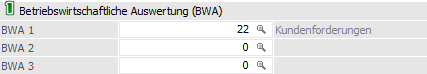
Ø BWA1 / BWA2 / BWA3
Eingabe eines Kennzeichens, nach dem die Konten für betriebswirtschaftliche Auswertungen sortiert und summiert werden können (z.B. im Menüpunkt "WinLine FIBU - Auswertungen - BWA-Liste")
Unterregister "FIBU" - Weitere Einstellungen
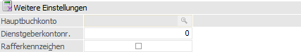
Ø Hauptbuchkonto
Als Hauptbuchkonto kann ein Sachkonto eingetragen werden, welches die Option "Als Hauptbuchkonto verwenden" gesetzt hat. Das Feld kann nur bearbeitet werden, solange das Konto nicht bebucht wurde.
Beim Eintragen eines Hauptbuchkontos wird geprüft, ob der Kontentyp des Hauptbuchkontos mit dem Kontotyp des Nebenbuchkontos übereinstimmt, d.h. ist das Hauptbuchkonto ein Bilanzkonto, kann es bei Bilanzkonten, Debitoren und Kreditoren eingetragen werden, ist es aber ein Erfolgskonto, kann es nur bei Erfolgskonten eingetragen werden.
Ø Dienstgeberkontonummer
In diesem Feld wird das jeweilige Subunternehmen bzw. beauftragte Unternehmen (Auftragnehmer) die Dienstkontonummer eingetragen sein.
Für Einzelpersonenunternehmen ist die Versicherungsnummer zu hinterlegen.
Ø Rafferkennzeichen
Bei Aktivierung dieser Option werden in den Auswertungen (Kontoblatt) nur die Kontosummen angezeigt, nicht jedoch die Einzelzeilen, wobei die Option keine Auswirkung auf die Speicherung der Daten hat! Das Kennzeichen kann jederzeit geändert werden.
Unterregister "FIBU" - Kreditlimit
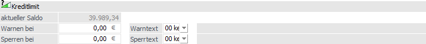
Die Kreditlimitwarnung bzw. -sperre wird nur in der WinLine FAKT anhand der Brutto-Werte geprüft. Da die Kreditlimitprüfung aber hauptsächlich auf Basis der FIBU-Daten erfolgt, werden die Eingaben in dem Register "FIBU" getätigt.
Achtung
Die Prüfung in der Belegbearbeitung erfolgt aufgrund des Kontensaldos und der vorhandenen Buchungsstapel! In der Belegart kann optional eingestellt werden, ob zusätzlich die noch nicht fakturierten Lieferscheine mitberücksichtigt werden sollen.
Für welche Belegstufen diese Sperre bzw. Warnung gelten soll, kann ebenfalls in der Belegart eingestellt werden.
Ø aktueller Saldo
Anzeige des aktuellen Saldos des Personenkontos.
Ø Warnen bei
Hier wird der Brutto-Betrag eingegeben, ab dem in der WinLine FAKT eine Warnung erfolgen soll. Bei der Warnung wird immer der Warntext 1 verwendet!
Hinweis
Durch Anklicken des Buttons kann der Betrag auch in der zweiten Währung, welche im Mandantenstamm hinterlegt wurde (z.B. USD), eingegeben werden. Dabei wird der eingegebene Betrag automatisch in die zweite Landeswährung umgerechnet, wobei bei diesem Konto das Kreditlimit auch in EURO abgeprüft wird.
Ø Sperren bei
Hier wird der Brutto-Betrag eingegeben, bei dem in der WinLine FAKT die Belegbearbeitung gesperrt und der Sperrtext 1 angezeigt wird.
Hinweis
Durch Anklicken des Buttons kann der Betrag auch in der zweiten Währung, welche im Mandantenstamm hinterlegt wurde (z.B. USD), eingegeben werden. Dabei wird der eingegebene Betrag automatisch in die zweite Landeswährung umgerechnet, wobei bei diesem Konto das Kreditlimit auch in EURO abgeprüft wird.
Ø Warntext
Aus der Auswahlliste kann ein beliebiger Warntext ausgesucht werden. Die Warntexte können in der WinLine FAKT über "Stammdaten - Kreditlimittexte" angelegt werden. Wird ein Warntext >= 01 hinterlegt, wird dieser Warntext bei jeder Erfassung eines Beleges angezeigt! Dadurch wird der Wert "Warnen bei" nicht mehr bearbeitbar.
Ø Sperrtext
Wird ein Sperrtext >= 01 hinterlegt, so ist dieses mit einer Liefersperre gleichzusetzen! Beim Aufruf des Kunden wird dieser Sperrtext angezeigt und es kann kein weiterer Beleg erfasst werden. Die Sperrtexte können ebenfalls in der WinLine FAKT über "Stammdaten - Kreditlimittexte" angelegt werden.
Unterregister "Erweitert" - Liquidität
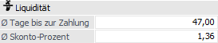
Ø Durchschnittliche Tage bis zur Zahlung
In diesem Feld wird die Anzahl der Tage eingegeben, die der Kunde / Lieferant durchschnittlich für die Zahlung braucht / wartet. Dieser Wert wird für die Berechnung in der Liquiditätsanalyse benötigt.
Ø Durchschnittliche Skonto-Prozent
In diesem Feld wird der durchschnittliche Skonto-Prozentsatz hinterlegt, der bei den Rechnungen in Abzug gebracht wird. Dieser Wert wird für die Berechnung in der Liquiditätsanalyse benötigt.
Unterregister "Erweitert" - Ritenute d´Acconto
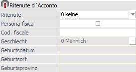
Diese Eingabefelder stehen nur zur Verfügung, wenn es sich um einen Mandanten mit Landeskennzeichen "Italien" handelt.
Unterregister "Erweitert" - 1099
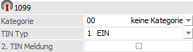
Diese Eingabefelder stehen nur zur Verfügung, wenn es sich um einen Mandanten mit Landeskennzeichen " USA / Philippinen" handelt und werden für die 1099-Auswertung verwendet.
Unterregister "Erweitert" - Weitere BKZ-Einstellungen
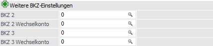
Ø BKZ 2 / BKZ 2 Wechselkonto/ BKZ 3 / BKZ 3 Wechselkonto
Die Position des Kontos in der Bilanz wird durch die Eintragung von Bilanzgliederungskennzahlen festgelegt, wobei insgesamt 3 mögliche Bilanzgliederungen hinterlegt werden können (siehe auch Unterregister "FIBU").
Achtung
Soll ein Konto unabhängig vom Wert des Saldos (Soll-Saldo/Haben-Saldo) einer fixen Bilanz-Position oder G & V-Position zugeordnet werden, wird in den Feldern "BKZ" und "BKZ Wechselkonto" die gleiche BKZ eingetragen.
Hinweis
Sobald bei einem Konto ein Hauptbuchkonto eingetragen ist, werden die Einstellungen für BKZ und BKZ Wechselkonto vom Hauptbuchkonto automatisch übernommen. In diesem Fall sind die BKZ und BKZ Wechselkonto-Felder inaktiv und können nicht bearbeitet werden.
Unterregister "Erweitert" - Elektronische Bilanz
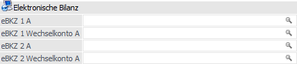
Ø eBKZ 1 / eBKZ 1 Wechselkonto / eBKZ 2 / eBKZ 2 Wechselkonto
Die Position des Kontos in der Elektronischen Bilanz wird durch die Eintragung von Kennzahlen festgelegt.
Wenn bei einem Konto unterschiedliche Einträge für eBKZ und eBKZ Wechselkonto gewünscht sind, kann dies nicht direkt in der e-Bilanz gemacht werden (beim Füllen des Trees wird nur die eBKZ berücksichtigt). Für eBKZ Wechselkonto muss der Kontenstamm oder der Schnellumstellungs-Assistent verwendet werden.
Hinweis
Sobald bei einem Konto ein Hauptbuchkonto eingetragen ist, werden die Einstellungen für eBKZ und eBKZ Wechselkonto vom Hauptbuchkonto automatisch übernommen. In diesem Fall sind die eBKZ und eBKZ Wechselkonto-Felder inaktiv und können nicht bearbeitet werden.
Unterregister "Erweitert" - Weitere Einstellungen
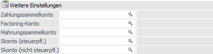
Ø Zahlungssammelkonto
Hier kann man ein Konto als Zahlungssammelkonto festlegen, dass letztendlich im Bereich "Dialog-Stapel-Buchen/ "-Quick" und "Zahlungsmittelkonten buchen" mit berücksichtigt wird. Findet beispielsweise eine Zahlungsbuchung auf ein Personenkonto statt, das bei einem oder mehreren Personenkonten gleichen Typs eingetragen ist - für Debitoren können nur Debitoren eingetragen werden, bei Kreditoren dementsprechend eben nur Kreditoren - werden in der Zahlungstabelle auch die offenen Fakturen dieser Konten angezeigt. Diese Zeilen der "Zahlungssubkonten" erscheinen in einer anderen Farbe.
Ø Factoring-Konto
Ist in einem Personenkonto ein Factoring-Konto eingetragen, werden im Zahlungsverkehr in den Ausdrucken und im Clearing die Anschrift und die Bankverbindung dieses Factoring-Kontos herangezogen. Die Buchungen bleiben unverändert.
Ø Mahnungssammelkonto
In diesem Feld wird ein Mahnungssammelkonto hinterlegt, welches bei der Mahnung und im Mahnjournal wahlweise berücksichtigt werden kann. Es wird dann nur eine Mahnung für das Mahnungssammelkonto ausgegeben, welche die Fakturen der einzelnen Personenkonten, die dieses Mahnungssammelkonto hinterlegt haben, mit andruckt.
Hinweis
Nur für Debitoren kann ein Mahnungssammelkonto eingetragen werden.
Ø Skonto (steuerpfl.)
In diesem Feld kann ein Skontokonto hinterlegt werden, auf das die steuerpflichtigen Skontobuchungen des Kunden / Lieferanten gebucht werden sollen. Damit wird das in der Steuerzeile hinterlegte Skontokonto übersteuert. Es ist darauf zu achten, dass das Konto mit dem richtigen Steuerkennzeichen hinterlegt ist (bei Kunden mit Umsatzsteuer, bei Lieferanten mit Vorsteuer). Ist das nicht der Fall, wird auch eine entsprechende Meldung ausgegeben, das Konto wird aber trotzdem gespeichert.
Ø Skonto (nicht steuerpfl.)
In diesem Feld kann ein Skontokonto hinterlegt werden, auf das die nicht steuerpflichtigen (das sind alle Buchungen, bei denen der Steuerprozentsatz 0 % beträgt) Skontobuchungen des Kunden / Lieferanten gebucht werden sollen. Damit wird das in der Steuerzeile hinterlegte Skontokonto übersteuert. Es ist darauf zu achten, dass das Konto mit dem richtigen Steuerkennzeichen hinterlegt ist (bei Kunden mit Umsatzsteuer, bei Lieferanten mit Vorsteuer). Ist das nicht der Fall, wird auch eine entsprechende Meldung ausgegeben, das Konto wird aber trotzdem gespeichert.
Buttons
Zusätzlich zu den im Kapitel Personenkonten beschriebenen Buttons stehen hier die folgenden Buttons zur Verfügung:
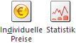
Ø Individuelle Preise
Durch Anwahl des Buttons "Individuelle Preise" können für dieses Personenkonto individuelle Preise pro Artikel erfasst werden. Diese Preise werden unter jener Preisliste abgespeichert, die zuvor im Personenkonto erfasst wurde.
Ø Statistik
Durch Anklicken des Buttons "Statistik" wird eine Kurz-Statistik zu diesem Personenkonto aufgerufen, wobei diese Statistik entweder komprimiert oder mit Einzelzeilen ausgegeben werden kann.